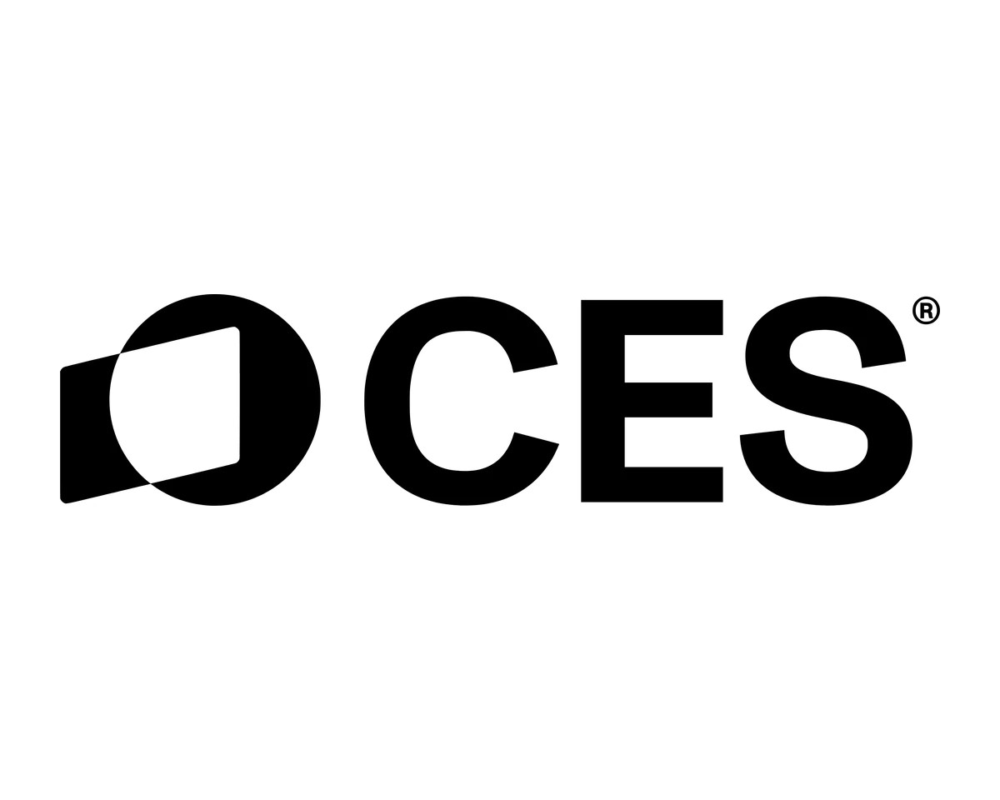
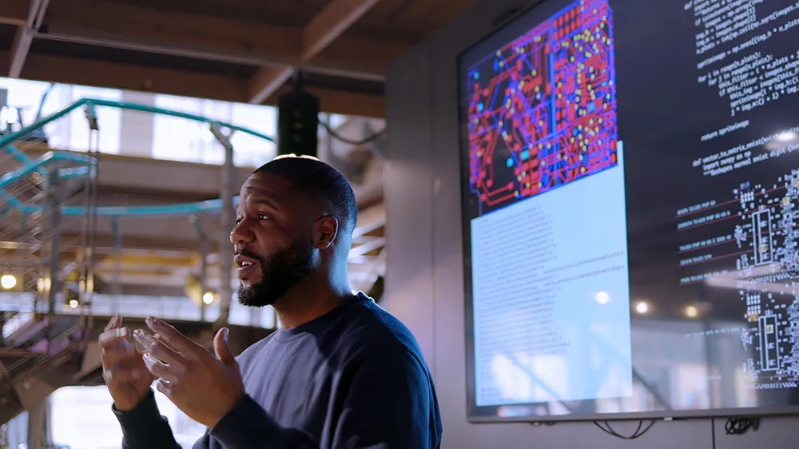

CES Las Vegas 2027 · 4 gece
fuartour.com · 0850 255 58 58
TASLAK

4 GECE · 5 – 10 OCAK 2027
CES Las Vegas 2027 Fuar Turu
Dünyanın en büyük tüketici teknolojileri fuarı · THY ile Los Angeles'a direkt uçuş · Las Vegas'ta fuara yakın otel


Fuar Bilgileri
FuarCES 2027 – Tüketici Elektroniği ve Teknoloji Fuarı (60. yıl)
Ürün gruplarıYapay zekâ ve çipler, robotik, mobilite, dijital sağlık ve giyilebilir cihazlar, akıllı ev, enerji, XR, girişimler (Eureka Park)
Fuar tarihi6–9 Ocak 2027
Ziyaretçi profiliYalnızca ticari ziyaretçiler
YerLas Vegas Convention Center ve çevre mekânlar, Las Vegas
OrganizatörConsumer Technology Association (CTA)
Geçmiş Fuar İstatistikleri · CES 2026
4.100+katılımcı firma
148.392ziyaretçi
55.841ABD dışından ziyaretçi
141ülke, bölge ve toprak
Gün Gün Program
1. GÜN5 Ocak Salı
İstanbul – Los Angeles – Las Vegas. 10:50 İstanbul Havalimanı dış hatlar gidiş katında buluşma, check-in ve pasaport işlemleri. 13:50 THY TK9 ile Los Angeles'a direkt uçuş, yerel saatle 16:35 varış. Karşılama ve kara yoluyla Las Vegas'a transfer (yaklaşık 4,5 saat), otele yerleşme.
2. GÜN6 Ocak Çarşamba
CES 1. gün. Las Vegas Convention Center'da fuar ziyareti, yaka kartlarının alınması ve firma görüşmeleri.
3.–4. GÜN7–8 Ocak Perşembe–Cuma
CES 2. ve 3. gün. Tam gün fuar ziyareti: The Venetian'daki sergi alanları ve girişimlere ayrılan Eureka Park. Akşamlar serbest.
5. GÜN9 Ocak Cumartesi
Las Vegas – Los Angeles – İstanbul. Sabah odaların boşaltılması ve kara yoluyla Los Angeles Havalimanı'na transfer (yaklaşık 4,5 saat; bu gün fuar ziyareti yoktur). 18:30 THY TK10 ile İstanbul'a direkt uçuş.
6. GÜN10 Ocak Pazar
İstanbul. 18:55 İstanbul Havalimanı'na varış ve turumuzun sonu.
Fuartour · Fuar ve iş seyahati organizasyonufuartour.com · 0850 255 58 581 / 3
CES Las Vegas 2027 · 4 gece
fuartour.com · 0850 255 58 58
TASLAK
KONAKLAMA · 4 GECE LAS VEGAS
Konaklama ve Tur Ücreti
Konaklama
Las Vegas · 5–9 Ocak (4 gece)Fuara yakın otel – otel adı belirlenecek
Uçuş ve Tur Ücreti · 4 gece, kişi başı
Gidiş TK9 · 5 Ocak Salı 13:50 → 16:35 (İstanbul – Los Angeles, direkt)
Dönüş TK10 · 9 Ocak Cumartesi 18:30 → 10 Ocak Pazar 18:55 (Los Angeles – İstanbul, direkt)
Çift kişilik odada kişi başıbelirlenecek USD
Tek kişilik odadabelirlenecek USD
Fiyata Dahil Hizmetler
- THY ile İstanbul – Los Angeles – İstanbul direkt uçak bileti (TK9 / TK10, 23 kg bagaj) ve havalimanı vergileri
- Las Vegas'ta fuara yakın otelde 4 gece konaklama
- Los Angeles Havalimanı – Las Vegas oteli – Los Angeles Havalimanı transferleri
Fiyata Dahil Olmayanlar
- ABD (B1/B2) vizesi ve başvuru harcı
- Fuar giriş kaydı
- Programda belirtilmeyen öğle ve akşam yemekleri
- Seyahat sağlık sigortası
- Yurt dışı çıkış harcı
- Opsiyonel turlar ve kişisel harcamalar
Fuartour · Fuar ve iş seyahati organizasyonufuartour.com · 0850 255 58 582 / 3
CES Las Vegas 2027 · 4 gece
fuartour.com · 0850 255 58 58
TASLAK
ŞEHİR REHBERİ
Las Vegas
Las Vegas
Nevada çölünün ortasındaki Las Vegas, dünyanın en büyük kongre ve fuar şehirlerinden biridir. CES, Las Vegas Convention Center salonlarının yanı sıra The Venetian'daki sergi alanlarına yayılır.
Saat farkı Türkiye'den 11 saat geriPara birimi ABD doları (USD)Elektrik 120 V · A ve B tipi priz
The StripLas Vegas Bulvarı boyunca temalı oteller ve gösteriler.
Bellagio ÇeşmeleriAkşam saatlerinde müzikli su gösterisi.
Fremont StreetEski şehir merkezi ve ışık tavanı.
SphereDev LED küre; dışarıdan da izlenebilir.
Fuar Ziyaretinde Dikkat Edilecekler
Kayıt ve giriş. CES yalnızca sektör profesyonellerine açıktır; kayıt önceden yapılır, yaka kartı fotoğraflı kimlikle teslim alınır.
Alanlar. Fuar birden çok mekâna yayılır: Las Vegas Convention Center, The Venetian'daki sergi alanları ve girişimlere ayrılan Eureka Park. Günlük rotanızı salonlara göre planlayın.
Kartvizit ve notlar. Bol miktarda İngilizce kartvizit getirin; görüştüğünüz firmaların kartlarına ürün ve fiyat notlarını aynı gün yazın.
Kıyafet. Rahat ayakkabı şart; salonlar arası mesafeler uzundur. Ocak ayında sabah ve akşam saatleri serindir.
Vize ve pasaport. Umuma mahsus pasaportla ABD'deki bir fuarı ziyaret etmek için göçmen olmayan ziyaretçi vizesi (B1/B2) gerekir; başvuru DS-160 formu ve kural olarak yüz yüze mülakatla yapılır. Vize başvuru desteği için Fuartour'a ulaşabilirsiniz.
Fuartour · Fuar ve iş seyahati organizasyonufuartour.com · 0850 255 58 583 / 3